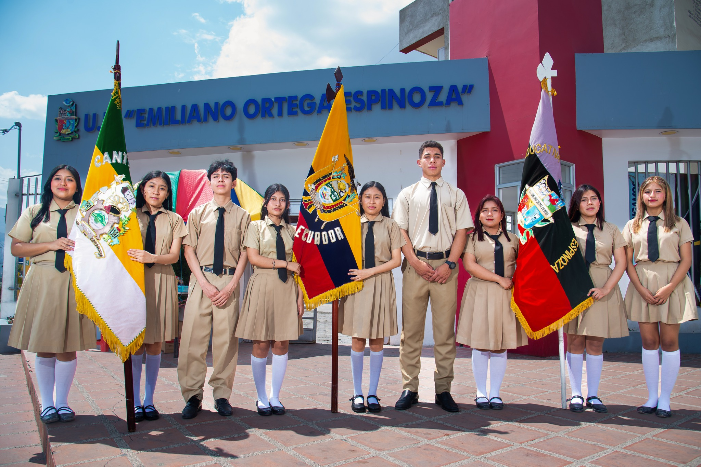
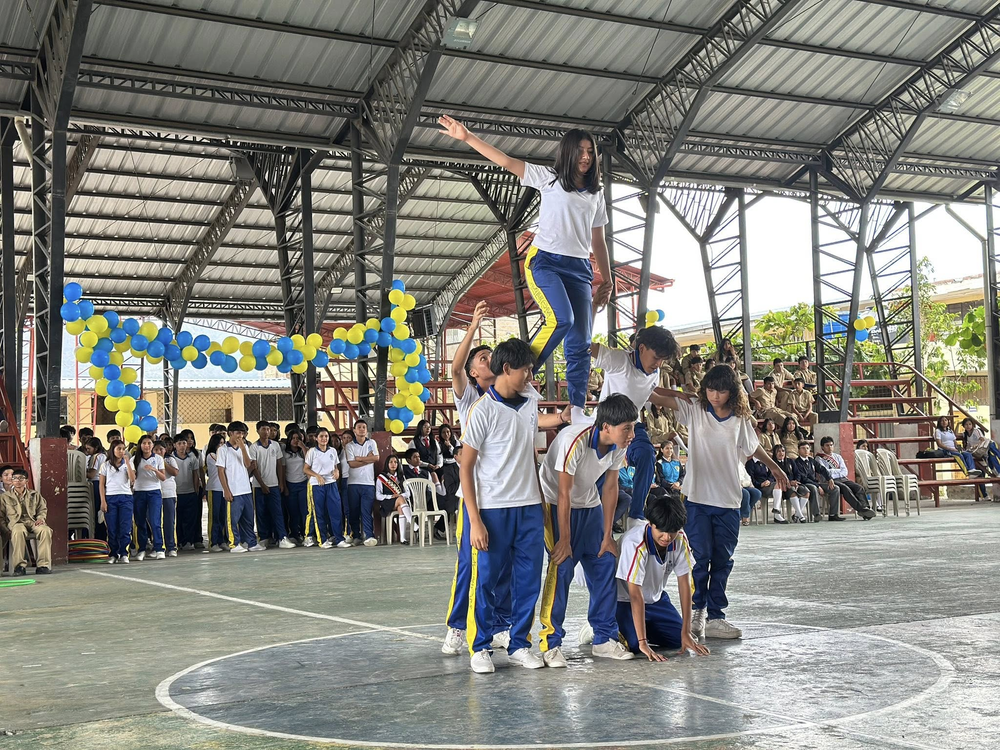

Uniforme de Parada

En la Unidad Educativa Emiliano Ortega Espinoza de Catamayo, Loja, Ecuador, el uniforme de parada es una vestimenta formal y distintiva
utilizada en ocasiones especiales y ceremonias importantes. Su propósito es proyectar una imagen de unidad, respeto y formalidad,
representando con orgullo a la comunidad educativa.
Para los varones:
- Camisa: Caqui, de manga corta y cuello formal.
- Pantalón: De vestir, color caqui.
- Corbata: Negra, sencilla.
- Zapatos: Negros, de vestir, limpios y lustrados.
- Medias: Negras o azul marino.
- Blazer o saco (opcional): Caqui, con el escudo institucional.
Para las mujeres:
- Blusa: Caqui, de manga corta.
- Falda: Caqui, de vestir, con largo adecuado.
- Corbata o lazo (opcional): Negro.
- Zapatos: Cerrados, negros o azul marino.
- Medias: Naturales o oscuras.
- Blazer o saco (opcional): Caqui, con el escudo institucional.
Elementos comunes:
- Escudo institucional: Bordado en el saco o blazer.
- Pulcritud: Prendas limpias, planchadas y en buen estado.
Ocasiones de uso:
- Ceremonias de graduación.
- Actos cívicos y conmemoraciones.
- Eventos académicos y culturales.
- Representaciones institucionales.
Para información actualizada sobre el uso del uniforme de parada, se recomienda consultar directamente
con las autoridades de la institución.
Uniforme de Educación Física

El uniforme de educación física está diseñado para brindar comodidad, seguridad y libertad de movimiento
durante las actividades deportivas y recreativas.
- Camiseta: Tela transpirable con el escudo institucional.
- Short deportivo: Cómodo y ligero.
- Pantalón largo (opcional): Para climas fríos.
- Zapatillas deportivas: Adecuadas para actividad física.
- Medias deportivas: Transpirables.
- Chaqueta deportiva (opcional): Para protección térmica.
- Botella de agua: Obligatoria para hidratación.
El uniforme deportivo debe mantenerse limpio y en buen estado. Para detalles específicos,
se recomienda revisar el reglamento interno de la institución.